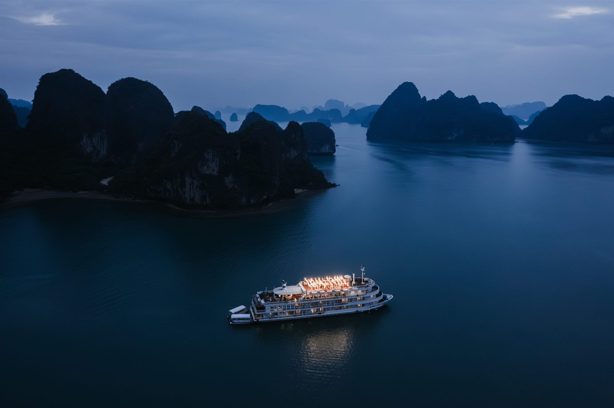

Vietnam, place by place.
An index for the first practical question: where can your celebration take everyone? Browse the country by region, then bring us the place, the people and the pace you are imagining.

North
Mountain air, river arrivals and limestone horizons. These places invite the group to slow down before the celebration begins.
4 destinationsSa Pa
For a gathering shaped by highland air and time away from the city.
Ask about Sa Pa
Ha Long
For an arrival and a celebration held on the water.
Ask about Ha LongMai Chau — Hoa Binh
For a retreat that gives guests space to settle in together.
Ask about Mai Chau
Ninh Binh
For a day with a quieter arrival, held by water and karst.
Ask about Ninh BinhCentral
Heritage cities, a long coast and cooler highland air offer very different ways to gather — from a full weekend to one concentrated celebration.
6 destinationsHue
For a celebration with a sense of history and ceremony.
Ask about HueDa Nang — Hoi An
For guests who want a coastal stay with a city close by.
Ask about Da NangQuy Nhon
For a more private rhythm by the sea.
Ask about Quy NhonDa Lat
For cool air, gardens and a slower multi-day gathering.
Ask about Da LatNha Trang
For a beach celebration with an easy guest stay.
Ask about Nha TrangPhan Thiet
For an unhurried coastal escape outside the city.
Ask about Phan ThietSouth
Waterways or an island horizon: both invite a longer celebration and give guests room to make a journey of it.
2 destinationsTell us how you want everyone to feel when they arrive.
If your shortlist is not clear yet, that is useful information too. We can begin with your guests, the time you have together and the kind of celebration you want the place to hold.
Begin the conversation